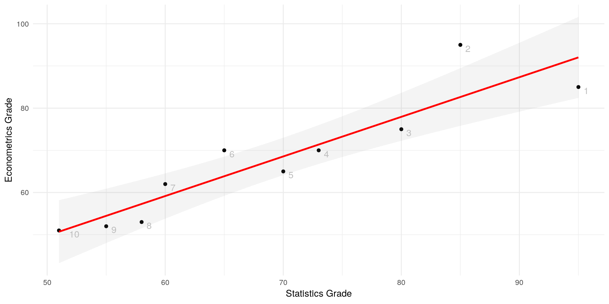

Now that we have learned about correlation and testing, we want to predict one variable from another. One simple way to do so is using linear regression. Simple linear regression (SLR) is about predicting a dependent variable (regressand) from one independent variable (regressor). A SLR model is given by: \[y = \beta_0 + \beta_1x + \epsilon\] where \(y\) is the regressand and \(x\) the regressor. \(\epsilon\) denotes the error of the model, i.e. the residuals. Regression is often used to model real-world relationships.
Basically, a linear regression model is nothing else other than a linear function \(y=mx+b\). In the regression case, \(\beta_0\) is \(b\), and \(\beta_1\) is \(m\), the slope. The regression line is the one line that crosses or passes the observation with the smallest amount of squared error.
library(ggplot2)
student_id = c(1,2,3,4,5,6,7,8,9,10)
x = c(95,85,80,73,70,65,60,58,55,51)
y = c(85,95,75,70,65,70,62,53,52,51)
grades_df = data.frame(student_id, x, y)
ggplot(grades_df, aes(x, y)) +
geom_point() +
labs(x="Statistics Grade", y="Econometrics Grade") +
geom_smooth(method="lm", colour="red", se=T, alpha=0.1) +
geom_text(aes(label=student_id),hjust=-1, vjust=1, color="gray") +
theme_minimal()Here, we have a linear model that predicts a student’s Econometrics grade from his or her Statistics grade. Notice that the line does not cross a single data point, but it minimises the squared deviations of all the single points from the line. Those deviations are called “residuals” and in a linear regression model, they sum up to zero. Lets take a look at the residuals:
resid = summary(lm(y~x, data=grades_df))$residuals; resid## 1 2 3 4 5 6
## -7.0271078 12.3632441 -2.9415800 -1.3683337 -3.5512281 6.1439478
## 7 8 9 10
## 2.8391237 -4.2828059 -2.4657004 0.2904404round(sum(resid))## [1] 0Look at the graph. The rightmost point (student 1) deviates by \(-7.03\) (the first entry of our residuals), the second by \(12.36\) etc.
Usually, researchers are interested in the amount of change in \(y\) that occur when \(x\) changes. As in any linear function, the rate of change is given by \(\beta_1\). More formally: \[\frac{\delta y}{\delta x} = \beta_1\]
Lets look again at the example. We have ten students who took exams in Statistics and exams in Econometrics. We know what grades were in percentage points. Now, we would like to predict the Econometrics grade of any other student who took the Statistics exam. Our model looks as follows:
\[\hat{econgrade} = \hat{\beta_0} + \hat{\beta_1}statsgrade + \hat{\epsilon}\] If you wonder about the hats (\(\hat{}\)), we use them because now that we look at empirical data, we cannot make any claims about the true or theoretical distribution, but only about our empirical data. We only have estimators, so we use hats to mark them accordingly.

summary(lm(y~x, data=grades_df))$coefficients## Estimate Std. Error t value Pr(>|t|)
## (Intercept) 2.8187652 10.0801739 0.2796346 0.7868516450
## x 0.9390352 0.1429934 6.5669819 0.0001753288Once again, we see a clear linear relationship between the students’ statistics grades and the econometrics grades. By how much does a student’s Econometrics grade increase if the student’s Statistics grade was better by one?
Look at the Estimate column. The first row in that column (2.82) is the intercept of the line with the y-axis. The interpretation of that value (which is not always meaningful) would be that if a student scored zero points in his statistics exam, he will score 2.82 on the Econometrics exam. The second row in the Estimate column is the estimate of the beta coefficient for our x, which is the Statistics grade. It tells us that the \(\hat{\beta_1}\) is 0.94. We would interpret this value as follows: “Ceteris paribus (with all else being equal), an increase of 1 of the Statistics grade implies an increase of 0.94 of the Econometrics grade.”. Many researchers are also interested in the statistical significance of our estimate. We find the \(p\)-value to be way below common standards (0.0002), so we would reject our null hypothesis (which was that the estimate equal to zero) and say that our beta coefficient is statistically significant. What does this mean? It basically means that we can believe that a better Statistics grade really implies a better Econometrics grade.
But we have an essential problem with this interpretation, because we do not actually know that we have a causal relationship here or just a correlation. And right now, we do not know whether the line we drew represents the best guess for a prediction. To answer these questions, we need to know more.
As we have heard before, the regression line is a line that fits our points so that it minimises the squared deviations (residuals) of the points from the line. To construct such a line, we need to know the intercept and the slope coefficient(s) for \(x\). The formulas are quite simple: \[\begin{align}\hat{\beta_1}&=\frac{Cov[x,y]}{Var[x]}\\\hat{\beta_0}&=\bar{y} - \hat{\beta_1}\bar{x}\text{.}\end{align}\] The proof is fun because it is simple. We set up a formal minimization problem because we want to minimize \(\hat{\epsilon}^2\). \[\min\limits_{\hat{\beta_0},\hat{\beta_1}}\sum_{i=1}^n\hat{u}_i^2 = \sum_{i=1}^n(y_i-\hat{\beta}_0-\hat{\beta}_1x_1)^2\] We minimise the function by taking the first order conditions (FOCs) by \(\hat{\beta_0}\) and \(\hat{\beta_1}\). The first FOCs is (as derived by \(\hat{\beta_0}\): \[\begin{aligned}&2\times\sum_{i=1}^n(y_i-\hat{\beta}_0-\hat{\beta}_1x_i) \stackrel{!}{=} 0 \text{ | :2} \\ \iff & \sum_{i=1}^n(y_i-\hat{\beta}_0-\hat{\beta}_1x_i) \stackrel{!}{=} 0\\ \iff & \sum_{i=1}^n(y_i)-\sum_{i=1}^n(\hat{\beta}_0)-\sum_{i=1}^n(\hat{\beta}_1x_i)\stackrel{!}{=}0\\ \iff & \sum_{i=1}^n(y_i)-n\times\hat{\beta}_0-\sum_{i=1}^n(\hat{\beta}_1x_i)\stackrel{!}{=}0\text{ | } :n\\ \iff & \bar{y}-\hat{\beta_0}-\hat{\beta_1}\bar{x}\stackrel{!}{=}0\\ \iff & \hat{\beta_0} = \bar{y} - \hat{\beta_1}\bar{x} \end{aligned}\] and then we derive by \(\hat{\beta_1}\): \[\begin{aligned}&2\times\sum_{i=1}^n-x_i(y_i-\hat{\beta}_0-\hat{\beta}_1x_i) \stackrel{!}{=} 0\text{ | :(-2)} \\ \iff & \sum_{i=1}^nx_i(y_i-\hat{\beta}_0-\hat{\beta}_1x_i) \stackrel{!}{=} 0\\ \iff & \sum_{i=1}^nx_i(y_i-(\bar{y}-\hat{\beta_1}\bar{x})-\hat{\beta}_1x_i) \stackrel{!}{=} 0\\ \iff & \sum_{i=1}^nx_i(y_i-\bar{y})+\sum_{i=1}^nx_i(\hat{\beta_1}\bar{x}-\hat{\beta_1}x_i) \stackrel{!}{=} 0\\ \iff & \sum_{i=1}^nx_i(y_i-\bar{y})-\hat{\beta_1}\sum_{i=1}^nx_i(x_i-\bar{x}) \stackrel{!}{=} 0\\ \iff & \sum_{i=1}^nx_i(y_i-\bar{y})=\hat{\beta_1}\sum_{i=1}^nx_i(x_i-\bar{x}) \text{ | *}\\ \iff & \sum_{i=1}^n(x_i-\bar{x})(y_i-\bar{y})=\hat{\beta_1}\sum_{i=1}^n(x_i-\bar{x})^2\\ \iff & \hat{\beta_1} = \frac{\sum_{i=1}^n(x_i-\bar{x})(y_i-\bar{y})}{\sum_{i=1}^n(x_i-\bar{x})^2} = \frac{Cov[x,y]}{Var[x]} \end{aligned}\]
The transformation denoted by the * results from the fact that \(\sum_{i=1}^nx_i(x_i-\bar{x}) = (x_i-\bar{x})^2\) and \(\sum_{i=1}^nx_i(y_i-\bar{y}) = (x_i-\bar{x})(y_i-\bar{y})\)
We will shortly learn under which conditions we can assume that we’re looking at a causal relationship of \(x\) on \(y\). But before we do that, we need to know and understand the Law of Iterated Expectations (LEI). It states that the Expectation of \(y\) given \(x\) is equal to the expectation of \(y\): \[\mathbb{E}\left[Y\right] = \mathbb{E}\left[\mathbb{E}\left[Y|X\right]\right]\] To get an idea why this holds, consider a game of darts being played in another room and you want to guess the landing spot of a dart. Let \(Y\) denote this spot. Without any prior information, our best guess for the value \(Y\) takes on would be the center \(c\) of the board: \[\mathbb{E}\left[Y\right] = c\] Now suppose that every time a dart is thrown, someone watching in the other room tells us whether the dart landed in the upper or lower half of the board. Let this be another random variable \(X\). By the information of \(X\) we can improve our guess for the landing spot - if \(X = upper\), then our best guess for \(Y\) might be the center of the upper half of the board, \(\mathbb{E}\left[Y|X = \text{upper}\right] = c^{\text{upper}}\), if \(X = lower\), then our best guess for \(Y\) would be the center of the lower half of the board, \(\mathbb{E}\left[Y|X = \text{lower}\right] = c^{\text{lower}}\) Thus, the expectation of \(Y\) conditional on \(X\) depends on whether \(X = up\) or \(X = low\). But since \(X\) is a random variable, \(\mathbb{E}\left[Y|X\right]\) is also a random variable. When iterating Expectations like \(\mathbb{E}\left[\mathbb{E}\left[Y|X\right]\right]\) we take expectations over the random variable \(\mathbb{E}\left[Y|X\right]\), i.e., averaging the two best guesses of \(X\) (upper and lower). When averaging those guesses proportional to how likely each \(X\) outcome will be, then we expect that the averaged guess \(\mathbb{E}\left[\mathbb{E}\left[Y|X\right]\right]\) agrees with the overall “direct” best guess \(\mathbb{E}\left[Y\right]\) Credits to Jimmy Jin for the great intuition behind the LEI.
For a regression to be more than a simple correlation, one has to make assumptions how \(x\) is related to the error term \(\epsilon\). For causal interpretations, \(x\) must not include information about \(\epsilon\), that is, they must not be correlated. If they would be correlated, it is still possible that something else than \(x\) predicts \(y\). Mathematically speaking: \[\mathbb{E} \left[\epsilon|x\right] = 0\] This is called the zero conditional mean assumption. If it holds, we have exogeneity. In the example with the statistics and econometrics grade, we obviously do not have exogeneity, as the statistics grade is for example also highly correlated with the number of hours spend studying, that may also affect the econometrics grade. In this case, \(\mathbb{E}\left[\epsilon|statsgrade\right] \neq 0\) Following from this and the Law of Iterated Expectations: \[\begin{aligned}\mathbb{E} \left[\epsilon|x\right] &= \mathbb{E}\left[\epsilon\right] = 0\text{,}\end{aligned}\] therefore: \[\begin{aligned}Cov\left[x, \epsilon\right] &= \mathbb{E}\left[x\epsilon\right] - \mathbb{E}\left[X\right] \mathbb{E}\left[\epsilon\right] = 0\end{aligned}\] Effectively, if the expected value of the error term is zero, the model is without error and thus average value of \(y\) can be expressed as a linear function of \(x\): \[\begin{aligned}\mathbb{E}\left[y|x\right] &= \mathbb{E}\left[\beta_0 + \beta_1x + \epsilon|x\right] \\ &= \beta_0 + \beta_1x + \mathbb{E}\left[\epsilon|x\right] \\ &= \beta_0 + \beta_1x \end{aligned}\]
Lastly, before interpreting SLR models, one should be aware of its assumptions, namely:
Note that this only holds as long as the the assumption of independence is met, i.e. \(\frac{\delta \epsilon}{\delta x} = 0\)